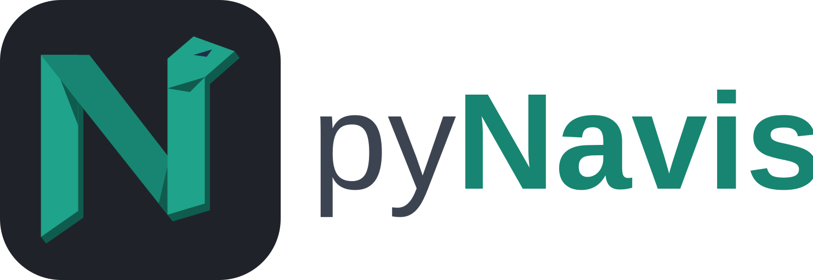

Python scripting and a folder-driven ribbon for Autodesk Navisworks Manage.
Drop a folder with a script.py and an icon into an extension, press Reload,
and it is a ribbon button. No compiling, no restart, no plugin boilerplate. If you have used pyRevit,
the layout will feel familiar.
Windows 10 or 11, Navisworks Manage. Apache-2.0 licence.
A ribbon built from folders
Pushbuttons, stacks, pulldowns, toggles, split buttons and slideouts are folder names.
Rename a folder and the button renames. Prefix it 03_ and it reorders.
Two Python engines, live reload
IronPython 3.4 ships in the box. Set engine: cpython to run on your installed
CPython when you need numpy or pandas. Edit a script, click the button again.
Dock panels, hooks, shortcuts
A pane.xaml becomes a native dockable window. Fourteen Navisworks events run
scripts with no click. Every button can carry a keyboard chord and a context rule.
MyTools.extension
└─ MyTools.tab
└─ Clash.panel
├─ 01_Group_by_level.pushbutton
│ ├─ script.py
│ ├─ icon.png
│ └─ bundle.yaml
└─ 02_Export_report.pushbutton
├─ script.py
└─ icon.pngfrom pynavis import forms, selection, sets, toast
items = selection.get_items()
if not items:
toast.warning('Select something first')
else:
name = forms.ask_string('Selection set name')
if name:
sets.create(name, items, folder='Levels')
toast.success('Saved %d items to %s' % (len(items), name))